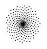

The sunflower (as well as many other plants such as the pinecone) maximize
the area used in distributing their seeds by rotating by the Golden Ratio
after placing each seed. You can see that the first image of the sunflower
corresponds to the middle diagram in the second image. The diagrams to the
left and to the right show what sunflower seed distributions would look
like if they used different angles of rotation. The GIF runs through multiple
distributions with varying angles of rotation. This showcases some of the beauties
of mathematics and how they show up in nature. For more details on this, check
out the following video here.
This is the ever famous Mandelbrot Set. The Mandelbrot Set is most well-known
for all the zoom-in videos done on it. The reason why these zoom-in videos are
so interesting is that the set is a fractal, and so no matter how close or far away
you zoom into the set, you will always end up seeing the same thing. For those
mathematically inclined, a video on the Mandelbrot Set is included here.
A zoom-in video can be viewed here. Caution! The zoom contains a lot of colors that come at you.
Please exercise caution if you have any medical conditions that make the video dangerous
to watch.

 This is the ever famous Mandelbrot Set. The Mandelbrot Set is most well-known
for all the zoom-in videos done on it. The reason why these zoom-in videos are
so interesting is that the set is a fractal, and so no matter how close or far away
you zoom into the set, you will always end up seeing the same thing. For those
mathematically inclined, a video on the Mandelbrot Set is included here.
A zoom-in video can be viewed here.
This is the ever famous Mandelbrot Set. The Mandelbrot Set is most well-known
for all the zoom-in videos done on it. The reason why these zoom-in videos are
so interesting is that the set is a fractal, and so no matter how close or far away
you zoom into the set, you will always end up seeing the same thing. For those
mathematically inclined, a video on the Mandelbrot Set is included here.
A zoom-in video can be viewed here.
 Here is a GIF showing that mathematically, a torus (often referred to as a donut) is
the same as a coffee mug. So now you too can be in on the joke about how donuts are
just coffee mugs.
Here is a GIF showing that mathematically, a torus (often referred to as a donut) is
the same as a coffee mug. So now you too can be in on the joke about how donuts are
just coffee mugs.


{kind=link}
{kind=link}